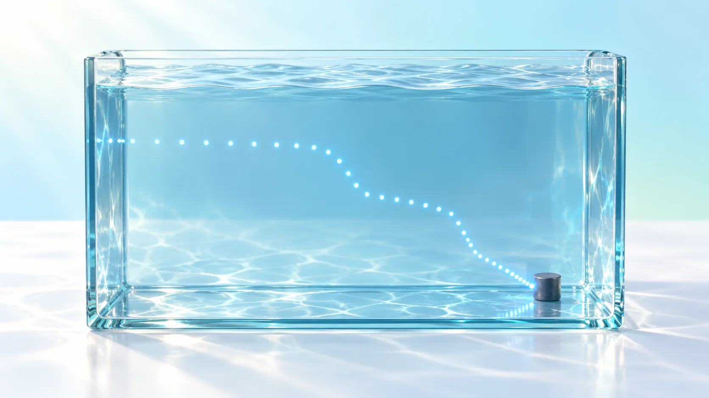
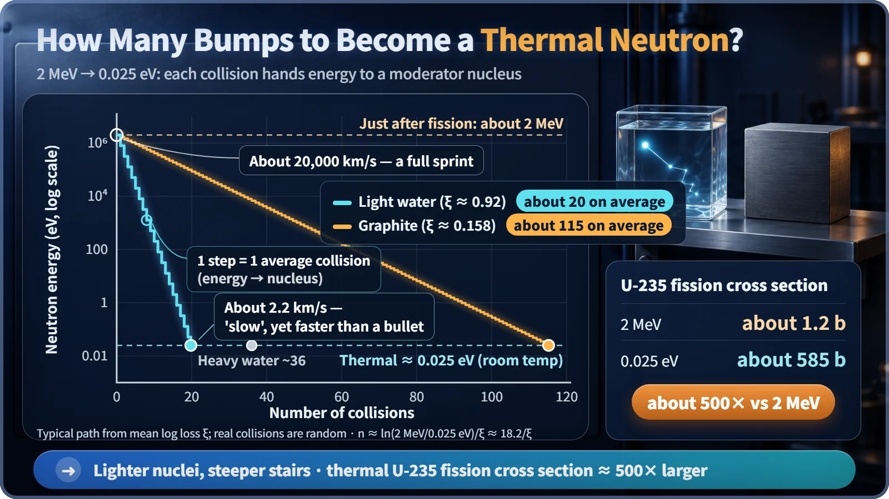
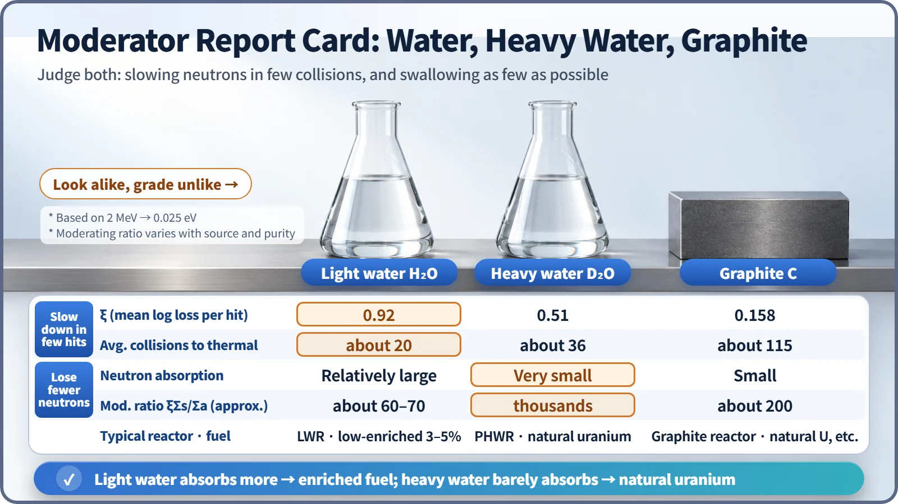

Nuclear Reactions & Fission · 042
Flyers Go to the Folks Who Walk Slowly — Why Neutron Moderation Makes Fission Easier
A slow neutron is far easier for a uranium-235 nucleus to catch. Moderators turn sprinting neutrons into strollers, and the choice of moderator shapes the fuel and the reactor.

Moderation slows the fast neutrons born in fission, about 2 MeV on average, down to thermal neutrons of about 0.025 eV through repeated collisions with light nuclei. A slowed neutron is hundreds of times more likely to split uranium-235, which is why reactors with a moderator can run on low-enriched or even natural uranium. [1]
Ever tried handing a flyer to someone who's running?
Picture someone handing out flyers outside a subway station. When a person strolls past, there's time to hold out a hand, and the flyer changes hands easily. But a commuter sprinting for the stairs at rush hour is long gone by the time you reach out. The person handing out flyers is just as skilled either way; the success rate changes because of one thing, the other person's speed.
Almost exactly the same thing happens between neutrons and uranium-235 nuclei inside a reactor. To trigger fission, a neutron has to be "caught" by a nucleus, and if it zips past too fast, it tends to miss its chance. So reactors deliberately slow neutrons down. This process is called moderation.
A sprinter 9,000 times faster
A neutron freshly born in fission carries an average energy of about 2 MeV (mega-electronvolts, a unit for the energy of very small particles), which means a speed of about 20,000 km per second. A thermal neutron that has slowed down enough carries about 0.025 eV at room temperature and moves at about 2,200 m per second. The speed difference is about 9,000 times: moderation turns a blazing sprinter into someone out for a stroll.
How much does that help? The likelihood that a nucleus reacts with a neutron is expressed as a cross section, measured in barns. Despite the name, it isn't the actual size of the nucleus; it's a measure of reaction probability expressed as if it were an area. The fission cross section of uranium-235 is about 585 barns for thermal neutrons, but only about 1.2 barns for fast neutrons near 2 MeV, a difference of hundreds of times, about 500 times. [2]
The slower you go, the longer you linger: the 1/v law
The classic rule behind this gap is the 1/v law. At low energies, the cross section is roughly inversely proportional to the neutron's speed v. As a formula, σ ∝ 1/v: halve the speed and the reaction probability roughly doubles.
Intuitively, it's the flyer scene again. A slow neutron lingers near a nucleus longer, so it has more chances to be caught. In reality this is a quantum-mechanical effect involving the wave nature of the neutron, so treat "time spent nearby" as a helpful mental picture rather than the full story. [3]
A common misconception: a fission triggered by a slow neutron doesn't release more energy. The roughly 200 MeV released when a nucleus splits has almost nothing to do with the neutron's speed. What changes is the probability that fission happens at all.
Why 3–5% uranium is enough
Natural uranium contains only 0.711% uranium-235. To keep a chain reaction going with fast neutrons alone, you'd need a much higher share of fissile material. Once neutrons are moderated, low-enriched uranium with about 3–5% U-235 is enough to sustain the chain reaction steadily (to stay critical). That's the level of fuel used in most of South Korea's reactors, and in light water reactors around the world. [4]
Three marks of a good moderator
A material that slows neutrons down is called a moderator, and a good one needs three things.
First, light nuclei. The closer a nucleus is in mass to a neutron, the more energy it takes away in each collision. This efficiency is measured by the average logarithmic energy decrement, ξ (xi): how much the energy drops, on average, per collision, on a logarithmic scale. Second, it must not absorb neutrons; swallowing them while slowing them down defeats the purpose. Third, its nuclei must be packed closely enough that collisions happen often.
The average number of collisions needed to reach thermal energy can be estimated as n ≈ 18.2 ÷ ξ, where 18.2 is the natural logarithm of the energy ratio from 2 MeV down to 0.025 eV. [1]

Light water, heavy water, graphite: the report cards
Light water (ordinary water): counting only the hydrogen nuclei, about 18 collisions; for water as a whole, about 20. It's the champion at slowing neutrons, but hydrogen absorbs a fair number of them, which is why light water reactors need enriched uranium.
Heavy water (water made with heavy hydrogen): counting only the deuterium, about 25 collisions; for the water as a whole, about 36. In exchange, it absorbs very little, so natural uranium can be used as fuel as it is. Pressurized heavy water reactors (CANDU), such as those at Korea's Wolsong plant, work this way.
Graphite (carbon): its nuclei are on the heavy side, so it takes about 115 collisions, but because it absorbs little it has long served as a moderator.
| Moderator | ξ | Collisions to thermal | Moderating ratio (approx.) |
|---|---|---|---|
| Light water | 0.92 | about 20 | about 60–70 |
| Heavy water | 0.51 | about 36 | thousands |
| Graphite | 0.158 | about 115 | around 200 |
The moderating ratio weighs moderating power against absorption. Exact values vary with the source and the purity. [5]

One more point: moderation isn't "chilling the neutron." With each collision the neutron hands some of its kinetic energy to the surrounding nuclei, until it comes down to roughly the level of the thermal jiggling of the atoms around it, hence the name "thermal" neutron. And while water does double duty as moderator and coolant in a light water reactor, those are two distinct jobs.
Key takeaways
Fast neutrons shoot right past uranium-235, while slow neutrons drift up and trigger fission. A moderator turns sprinters into strollers, and the choice of moderator shapes everything down to the fuel's enrichment and the reactor's design. When you read a comparison of reactor types, start by asking "what's the moderator?" and you'll know about half of that reactor's personality.